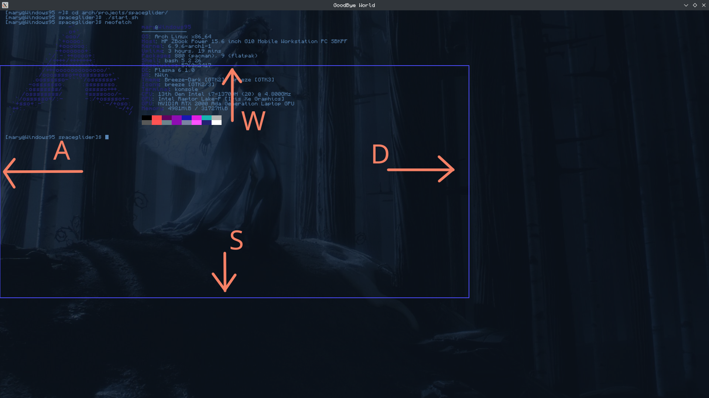
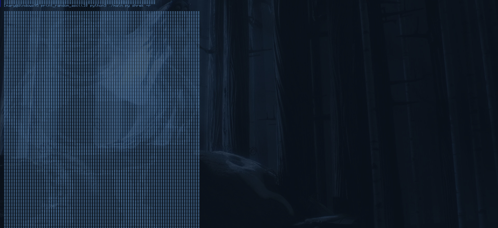
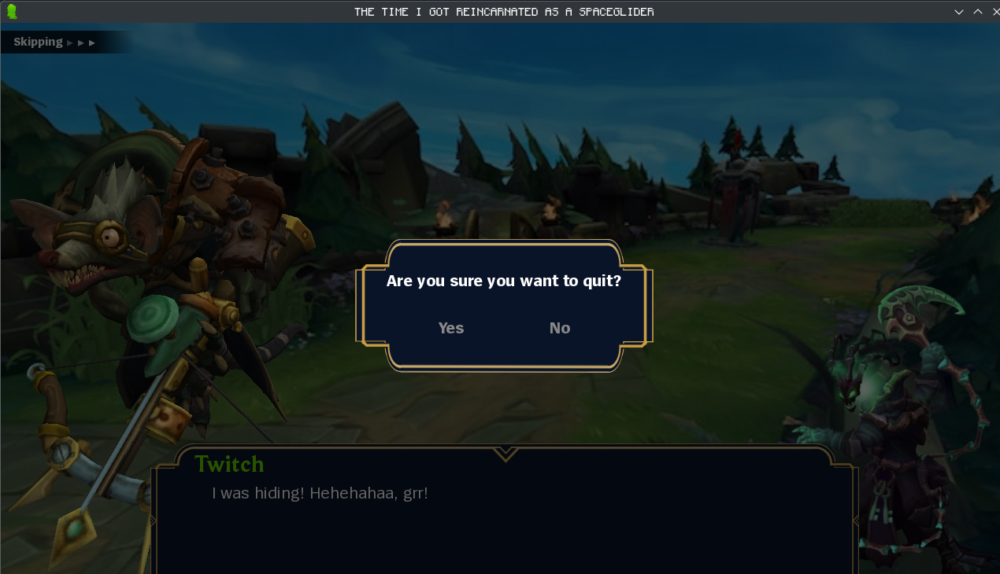
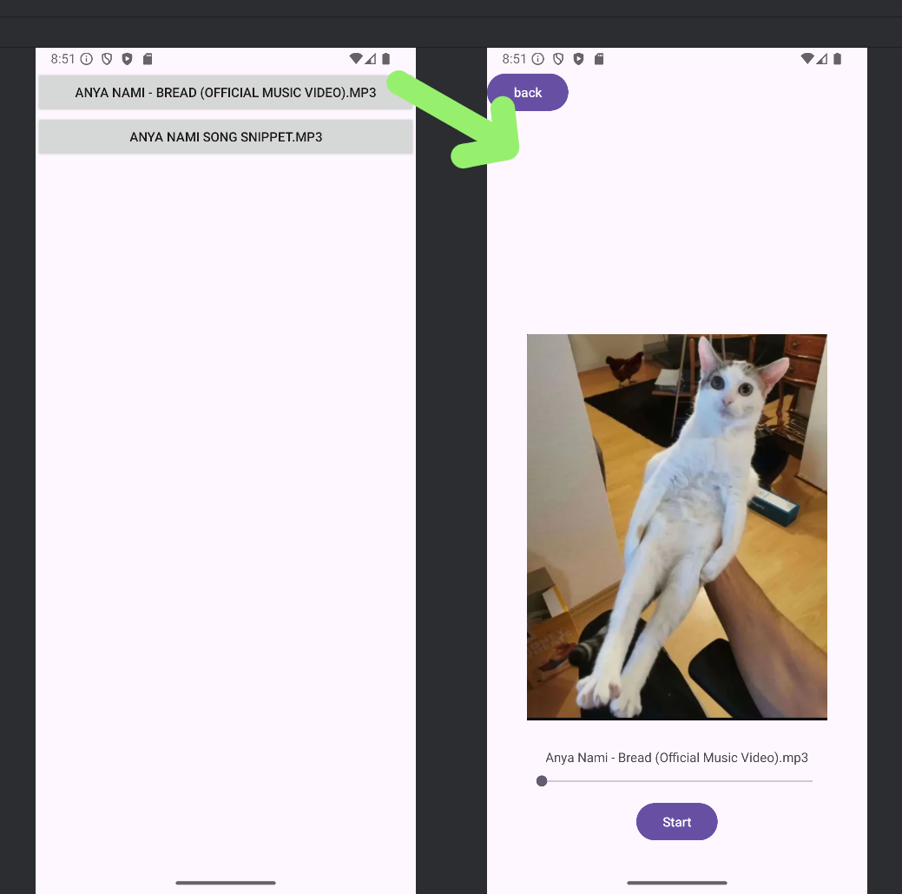

Projects
Screenshot Tool
 GitHub
Screenshoting tool made in python that uses vim motions.
Requirements:Gtk3
Usage:python3 main.py will take screenshot of main window
Specifications:As mentioned before you can operate this tool using
WSAD keys and HJKL where WSAD picks which side you want to adjust(as
can be seen on the picture above) and HJKL are used to adjust their
position so H,L can move sides to left,right and J,K can adjust
their height.After positioning your border you can take the
screenshot by presing 'p'.
This tool saves the image into
~/Pictures/Screenshots/ in format of current YEAR-MONTH-DAY
HOUR:MINUTE:SECOND.png so that your screenshot is always the last
file with this format.
Pictures/Screenshots/ directory isnt
initiated so you will need to make it yourself or if you prefer to
save it somewhere else you can rewrite the main.py
update: now supports specifying number of pixels it should move by like in neovim. Example ) 123wj will move top-border(w) down (j) by 123 pixels
Program only works on main screen because I don't need more but I'd like to add support for multiple screens
WebScraper
 GitHubWebScraper capable of storing ascii art and printing it
Requirements:python-requests|beautifulsoup4
Usage:
- python3 main.py -w name will create directory named after your 'name' and prompt you to write your ascii image
- python3 main.py -r name will try to access that directory and then read random image from it
- pyrhon3 main.py -l prompt will look up images with that name and write every element with tag 'dot_art' as txt file
Specifications:This project stores ascii images as txt files in their own directory in path-to-folder/images/name , print them and save them from https://emojicombos.com/. where it will only look at dot_art type.
Password Manager
GitHubPassword Manager made with ptg that uses fernet for encrypting
Requirements PyTermGui Fernet Paperclip Pandas
Specifications:Aplication encrypts and store user given passwords using fernet base64 encryption. After inputing key information (website,account,password) user has to give the program access key which will be used by fernets encryption and then by using pandas store the output into a csv file. UI is all made in PyTermGui.
Visua Novel
 GitHubRequirements RenPy
Specifications:Ongoing project in python using RenPy library about league of legends character in another world
Website Redesign

Specifications: The website above one of many pages I worked on as part time job . My job was to redesign about 12 pages to prespecified look using html/css and little javascript.
Audio Player
 GithubAudio Playing app ... Don't have much to say to this one . I wanted an app where I could listen to audiobooks so I made it.